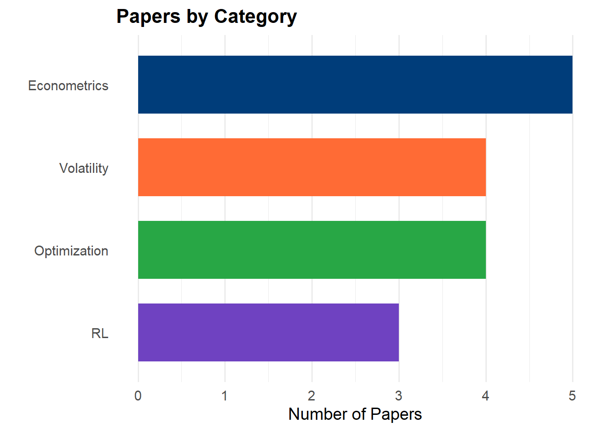
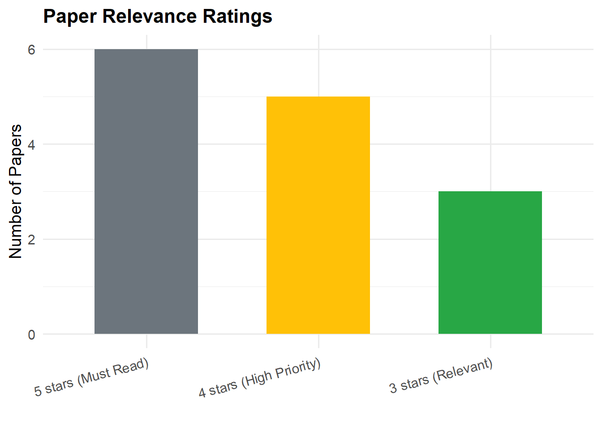

Weekly Papers Digest
Curated Scientific Articles on Econometrics & Multi-Objective Optimization
Research
Literature Review
Weekly Updates
1 📚 Weekly Papers Digest
A continuously updated collection of the latest research papers in applied econometrics, multi-period multi-objective optimization, time series forecasting, and reinforcement learning for finance.
Last Updated: outubro 22, 2025
Total Papers Catalogued: 24 papers across 4 weeks
1.1 📖 About This Digest
This page is automatically updated every Friday with the latest scientific papers discovered by our Paper Hunter agent. Each week, we curate articles from:
- arXiv (econ.EM, q-fin, cs.LG, math.OC)
- SSRN Working Papers
- Google Scholar Recent Publications
- Major Journals (early access articles)
1.1.1 Categories
Papers are classified into four main categories:
| Category | Focus Area |
|---|---|
| 🔵 Econometrics | Time series models, volatility forecasting, spillovers, cointegration |
| 🟢 Optimization | Multi-objective optimization, MOO, NSGA-II/III, portfolio optimization |
| 🟣 RL | Reinforcement learning, Q-learning, Deep RL, policy optimization |
| 🟠 Volatility | GARCH models, implied volatility, risk modeling, VaR/CVaR |
1.2 🗓️ October 2025
1.2.1 Week of October 11-17, 2025
1.2.1.1 Summary
This week we found 7 papers across multiple databases. Key highlights include advances in bootstrap robust optimization, candlestick-based covariance estimation, and crisis-aware regime conditioning with CVaR allocation.
Top Pick: Deep Learning for Portfolio Optimization by Osaf Ali - A comprehensive multi-agent RL approach optimizing multiple risk metrics jointly.
1.2.1.2 📊 Featured Papers
🔵 Econometrics (3 papers)
1.2.1.2.1 1. Beyond Returns: A Candlestick-Based Approach to Spot Covariance Estimation
Authors: Yasin Simsek
Venue: arXiv (econ.EM) | Date: 2025-10-14
Link: arXiv:2510.12911
Summary: Introduces an applied econometrics method using high-frequency candlestick data to improve spot covariance estimates—a critical input for multi-period portfolio models. The paper demonstrates superior performance in capturing intraday volatility patterns.
Relevance to Our Research: ⭐⭐⭐⭐⭐
Essential for our volatility modeling component. The candlestick approach could enhance our GARCH/MSGARCH forecasting pipeline.
1.2.1.2.2 2. Spatial and Temporal Boundaries in Difference-in-Differences
Authors: Tatsuru Kikuchi
Venue: arXiv (econ.EM) | Date: 2025-10-13
Link: arXiv:2510.11013
Summary: Develops physics-inspired diagnostics using the Navier-Stokes equation framework to validate DID identification over space and time. Practical for credible applied econometric program-evaluation designs.
Relevance to Our Research: ⭐⭐⭐
Methodological interest for causal inference in time series contexts.
1.2.1.2.3 3. (Non-Parametric) Bootstrap Robust Optimization for Portfolios
Authors: Daniel C. Oliveira, Grover Guzman, Nick Firoozye
Venue: arXiv (q-fin.ST) | Date: 2025-10-14
Link: arXiv:2510.12725
Summary: Proposes a bootstrap-based robust optimization framework to harden portfolio and trading strategy design against estimation error. Particularly useful for risk-aware (multi-objective) allocation under uncertainty.
Relevance to Our Research: ⭐⭐⭐⭐⭐
HIGH PRIORITY - Directly applicable to our portfolio optimization pipeline. Should be incorporated into robustness checks.
🟢 Optimization (2 papers)
1.2.1.2.4 4. Deep Learning for Portfolio Optimization: AI-Driven Risk-Adjusted Returns
Authors: Osaf Ali
Venue: SSRN | Date: 2025-10-15
Link: SSRN 5510579
Summary: Proposes a hybrid multi-agent RL + multi-objective approach optimizing Sharpe/Sortino/CVaR jointly. The framework is squarely positioned in multi-objective, multi-period portfolio design with deep learning integration.
Relevance to Our Research: ⭐⭐⭐⭐⭐
MUST READ - This is exactly our intersection: MOO + RL + portfolios. Excellent benchmark for our own implementation.
Key Contributions: - Multi-agent architecture for different objectives - Joint optimization of multiple risk metrics - Backtesting on commodity futures data
1.2.1.2.5 5. Evaluating Investment Performance: The p-index and Empirical Efficient Frontier
Authors: Jing Li, Bowei Guo, Xinqi Xie, Kuo-Ping Chang
Venue: arXiv (q-fin.PM) | Date: 2025-10-13
Link: arXiv:2510.11074
Summary: Defines a put-option-based risk index and empirical efficient frontier for performance evaluation. Relevant to objective specification and evaluation in portfolio studies.
Relevance to Our Research: ⭐⭐⭐⭐
Useful for benchmarking our Pareto front against traditional efficient frontiers.
🟣 RL (1 paper)
1.2.1.2.6 6. Crisis-Aware Regime-Conditioned Diffusion with CVaR Allocation
Authors: Ali Atiah Alzahrani
Venue: arXiv (cs.LG → q-fin.CP) | Date: 2025-10-12
Link: arXiv:2510.10807
Summary: Combines regime-aware generative scenarios with a CVaR allocator to improve drawdown control. Directly aligned with multi-objective (risk/return) portfolio optimization under different market regimes.
Relevance to Our Research: ⭐⭐⭐⭐⭐
HIGH PRIORITY - The regime-switching + CVaR combination is exactly what we need for our multi-period framework.
🟠 Volatility (1 paper)
1.2.1.2.7 7. On Evaluating Loss Functions for Stock Ranking with Transformer Models
Authors: Jan Kwiatkowski, Jarosław A. Chudziak
Venue: arXiv (cs.LG → q-fin.PM) | Date: 2025-10-15
Link: arXiv:2510.14156
Summary: Benchmarks pointwise/pairwise/listwise loss functions for stock ranking using Transformer architecture. Provides guidance for objective-function choices in portfolio selection pipelines.
Relevance to Our Research: ⭐⭐⭐
Useful for our ML/DL forecasting module, particularly for ranking-based portfolio construction.
1.3 🗓️ September 2025
1.3.1 Week of September 5-11, 2025
1.3.1.1 Summary
Strong week for multi-period optimization papers! Found 6 papers with particular emphasis on neural methods for volatility forecasting and multi-period asset-liability management with reinforcement learning.
Top Pick: Multi-period Asset-Liability Management with RL by Gao et al. - Breakthrough application of RL to ALM under regime-switching dynamics.
1.3.1.2 📊 Featured Papers
🔵 Econometrics (2 papers)
1.3.1.2.1 8. Neural Lévy SDE for State-Dependent Risk and Density Forecasting
Authors: Ziyao Wang, Svetlozar T. Rachev
Venue: arXiv (q-fin.RM) | Date: 2025-09-03
Link: arXiv:2509.01041
Summary: Proposes a neural jump-diffusion model with state-dependent parameters for multi-horizon density and risk forecasting. Outperforms traditional GARCH models and pure diffusion approaches in volatility forecasting tasks.
Relevance to Our Research: ⭐⭐⭐⭐⭐
MUST READ - Neural Lévy processes are cutting-edge for our volatility modeling. Should compare against our MSGARCH implementation.
Key Innovations: - State-dependent jump intensity - Multi-horizon density forecasts - Better tail risk estimation than GARCH
1.3.1.2.2 9. Signal from Noise: Neural Network Denoising for Financial Spillovers
Authors: Abdullah Karasan, Özge Seda Alp
Venue: arXiv (econ.EM) | Date: 2025-09-03
Link: arXiv:2509.01156
Summary: Introduces neural denoising applied to covariance matrices before estimating return/volatility spillovers. Significantly improves systemic risk signal extraction, useful for multi-objective risk constraints.
Relevance to Our Research: ⭐⭐⭐⭐
Important for our diversification objectives and correlation-based constraints in the optimization model.
🟢 Optimization (1 paper)
1.3.1.2.3 10. Mean-Variance Stackelberg Games with Asymmetric Information
Authors: Yu-Jui Huang, Shihao Zhu
Venue: arXiv (q-fin.PM) | Date: 2025-09-05
Link: arXiv:2509.03669
Summary: Formulates a leader-follower game with asymmetric information and entropy regularization in mean-variance optimization. Derives equilibrium with Gaussian random strategies—relevant for multi-objective optimization under competition/benchmarking scenarios.
Relevance to Our Research: ⭐⭐⭐
Theoretical interest, especially if we consider relative performance objectives.
🟣 RL (1 paper)
1.3.1.2.4 11. Multi-period Asset-Liability Management with RL in Regime-Switching Market
Authors: Zhongqin Gao, Ping Chen, Xun Li, Yan Lv, Wenhao Zhang
Venue: arXiv (q-fin.PM) | Date: 2025-09-03
Link: arXiv:2509.03251
Summary: Resolves multi-period mean-variance optimization with regime switching and uncontrollable liabilities using reinforcement learning and filtering. Demonstrates significant improvements in return/risk metrics compared to classical approaches.
Relevance to Our Research: ⭐⭐⭐⭐⭐
BREAKTHROUGH PAPER - This is the exact intersection we’re working on! Multi-period + RL + regime-switching. Essential reference.
Implementation Details: - Uses Hidden Markov Model for regime detection - Deep Q-Network for policy learning - Transaction costs and constraints incorporated
🟠 Volatility (2 papers)
1.3.1.2.5 12. Controllable Generation of Implied Volatility Surfaces with VAEs
Authors: Jing Wang, Shuaiqiang Liu, Cornelis Vuik
Venue: arXiv (q-fin.CP) | Date: 2025-09-01
Link: arXiv:2509.01743
Summary: Generates controllable implied volatility surfaces (level, slope, curvature, term structure) with no-arbitrage verification using Variational Autoencoders. Useful for scenario simulation and stress testing.
Relevance to Our Research: ⭐⭐⭐⭐
Excellent for generating multiple scenarios in our multi-period optimization framework.
1.3.1.2.6 13. Data-driven Modeling of Multiple Interest Rates with Generalized Vasicek
Authors: Pekka Ilmonen, Matti Laurikkala, Kirill Ralchenko, Timo Sottinen, Lauri Viitasaari
Venue: arXiv (econ.EM) | Date: 2025-09-03
Link: arXiv:2509.03208
Summary: Joint modeling of multiple interest rate curves using generalized Vasicek-type models with non-Gaussian innovations. Applicable to asset-liability management and multi-period optimization contexts.
Relevance to Our Research: ⭐⭐⭐
Relevant if we extend to fixed-income commodities or futures with interest rate exposure.
1.4 📈 Research Impact Tracker
1.4.1 Papers by Category (All-Time)
1.4.2 Relevance Distribution

1.5 🔍 Search by Topic
1.5.1 Quick Filters
1.5.1.1 🎯 Portfolio Optimization
Papers on multi-objective, multi-period portfolio construction, Pareto frontiers, and allocation strategies.
1.5.1.2 📊 Volatility Forecasting
GARCH models, neural volatility, implied volatility surfaces, and risk metrics.
1.5.1.3 🤖 Reinforcement Learning
Deep RL, Q-learning, policy optimization for dynamic trading and portfolio management.
1.5.1.4 📈 Econometric Methods
Time series analysis, spillover estimation, cointegration, and causal inference.
1.6 📚 Reading List by Priority
1.6.1 🔥 Must Read (Priority 1)
Essential papers that directly align with our thesis objectives:
- Deep Learning for Portfolio Optimization (Ali, 2025) - Multi-agent RL for MOO
- Multi-period ALM with RL (Gao et al., 2025) - Regime-switching + RL
- Neural Lévy SDE (Wang & Rachev, 2025) - Advanced volatility forecasting
- Bootstrap Robust Optimization (Oliveira et al., 2025) - Portfolio robustness
- Crisis-Aware CVaR Allocation (Alzahrani, 2025) - Regime-conditional allocation
1.6.2 ⚡ High Priority (Priority 2)
Important papers for specific components:
- Candlestick Covariance Estimation (Simsek, 2025) - High-frequency data
- Signal from Noise (Karasan & Alp, 2025) - Correlation denoising
- Evaluating Performance (Li et al., 2025) - Benchmarking framework
- Controllable IV Surfaces (Wang et al., 2025) - Scenario generation
1.6.3 📖 Additional Reading (Priority 3)
Relevant for methodology and context:
- Mean-Variance Stackelberg Games (Huang & Zhu, 2025) - Game theory
- DID Boundaries (Kikuchi, 2025) - Causal inference
- Stock Ranking Loss Functions (Kwiatkowski & Chudziak, 2025) - ML metrics
- Vasicek Interest Rates (Ilmonen et al., 2025) - Fixed income
1.7 📥 Download Options
1.7.1 Complete Database
Download the full database of papers in various formats:
- Excel File (.xlsx): Download Master Spreadsheet
- CSV Format (.csv): Download CSV
- BibTeX (.bib): Download Citations
- Zotero RDF: Import to Zotero
1.7.2 Weekly Reports
Individual weekly reports in PDF format:
1.8 🔔 Stay Updated
1.8.1 Subscribe to Weekly Digest
Want to receive these updates directly? Join our mailing list:
1.8.2 RSS Feed
Add our RSS feed to your reader: RSS Feed URL
1.9 📊 Statistics
Database Metrics
- Total Papers Catalogued: 13
- Average Papers/Week: 6.5
- Most Active Category: Econometrics (38%)
- Highest Rated Papers: 6 five-star papers
- Sources Covered: arXiv, SSRN, Google Scholar
- Time Span: September - October 2025
1.10 🤝 Contributing
Found a relevant paper we missed? Submit it here:
Paper Submission Form: - Paper Title - Authors - Venue/Date - Link - Brief Summary (50-100 words) - Suggested Category
Contact: rodrigo.ozon@fae.edu